MH Ticker — theme catalogue
Rendered by panel::draw at 96 dpi, 724 × 394. Animated themes are shown as three frames a third of a cycle apart.
Basic — one solid fill
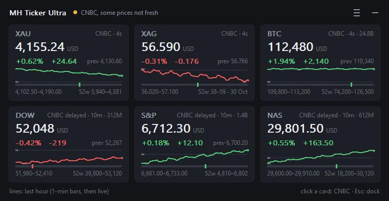
midnight — the original, Segoe UI
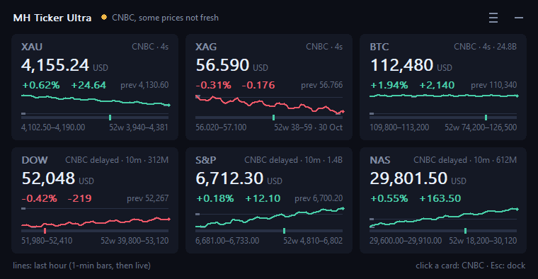
ink — near-black navy
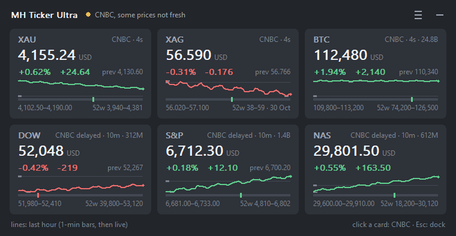
slate — cool grey
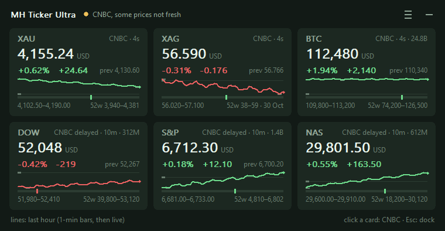
moss — deep green
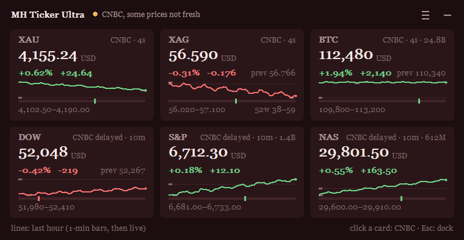
oxblood — Georgia
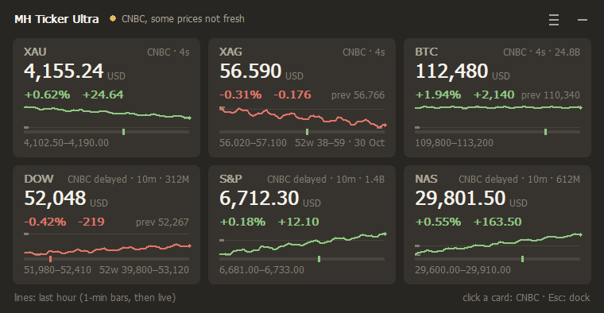
taupe — Tahoma
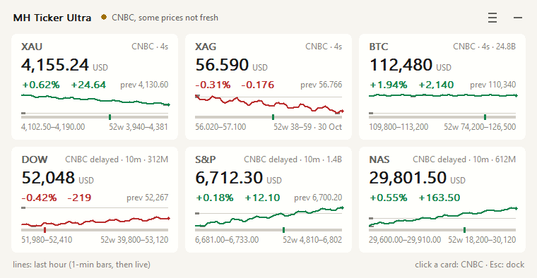
paper — light
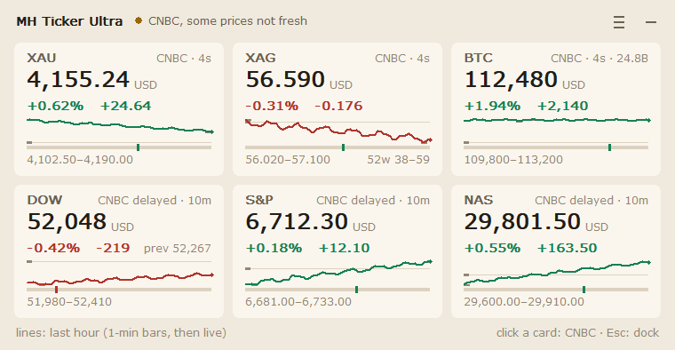
sand — Verdana
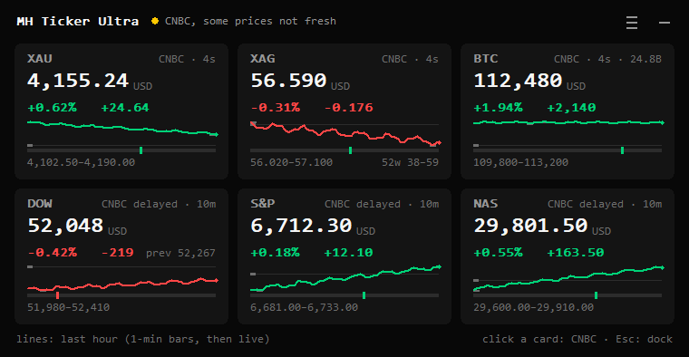
mono — Consolas
Gradients — a two-colour ramp
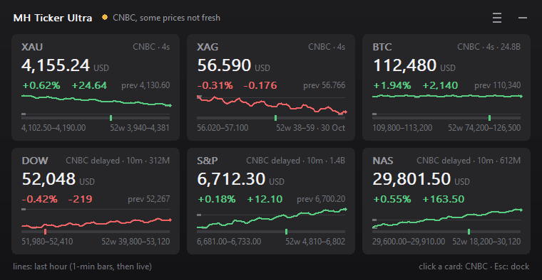
graphite
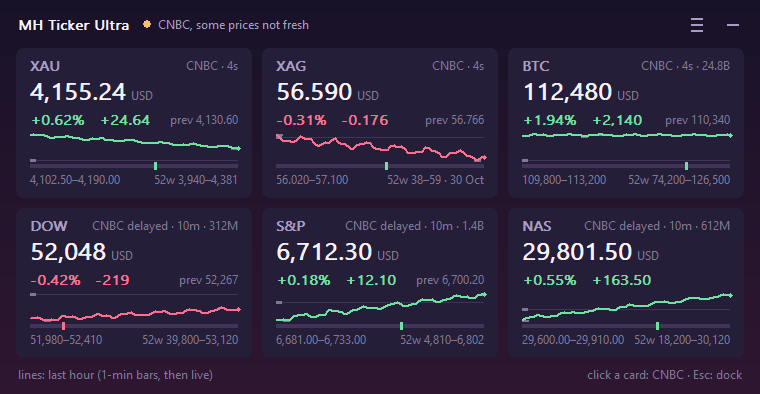
aurora — the icon's ramp
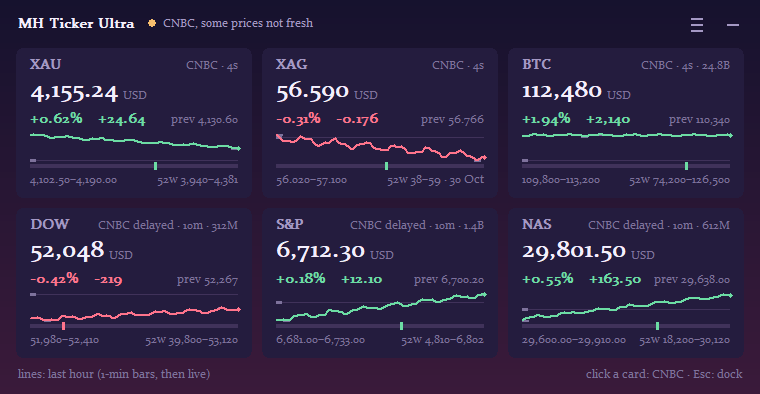
dusk — Constantia
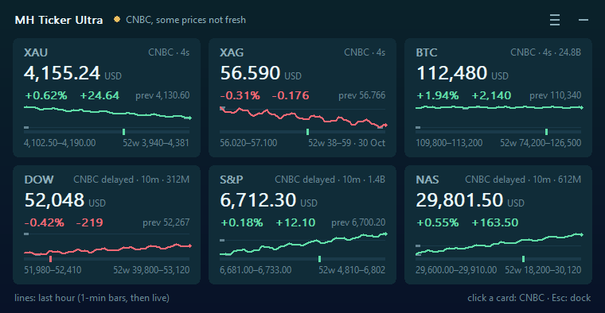
ocean
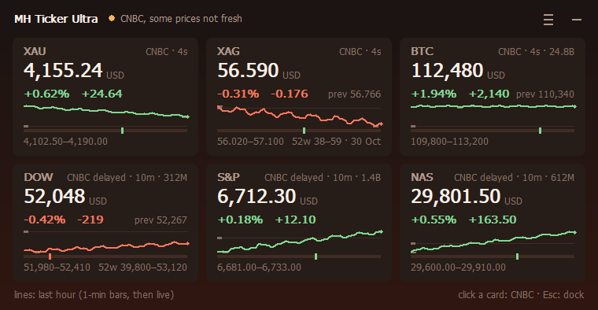
ember — Tahoma
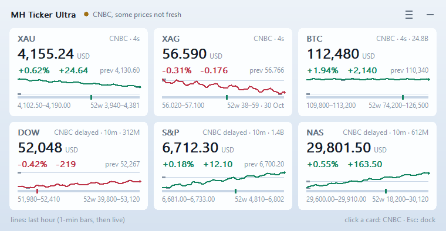
glass — light
Animated — the ramp drifts
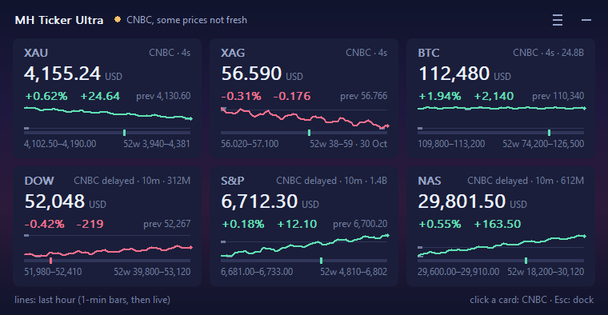
drift frame 1
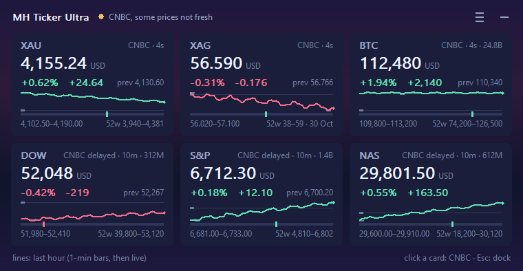
drift frame 2
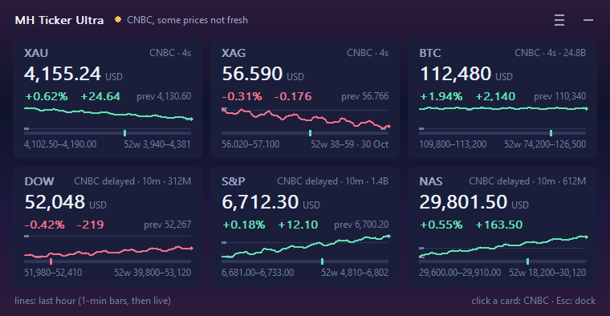
drift frame 3
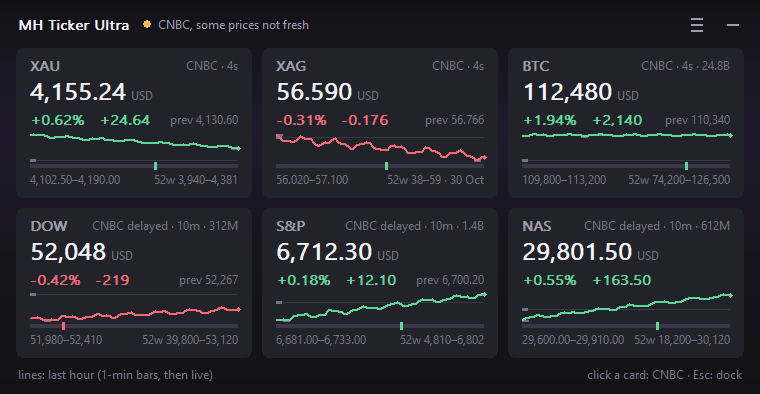
pulse
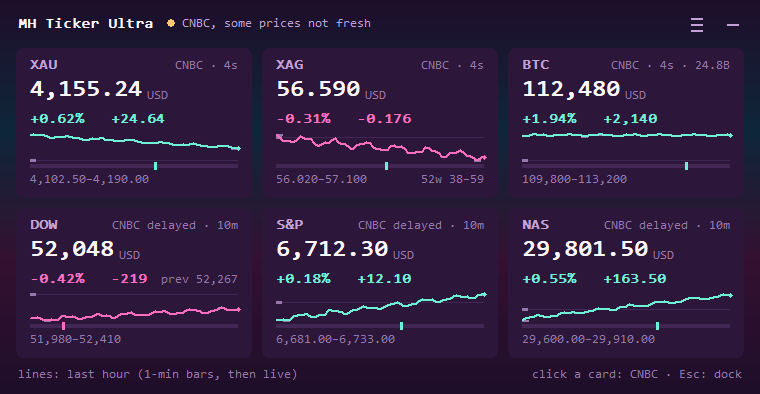
vaporwave — Consolas
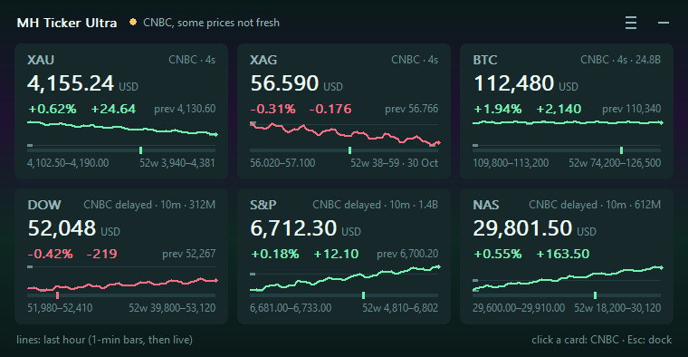
aurora-live
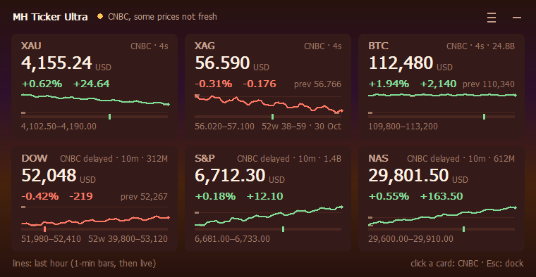
sunset — Tahoma
Retro — chunky, dithered, bitmap faces
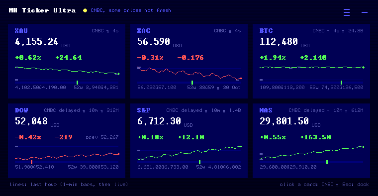
ega — Terminal
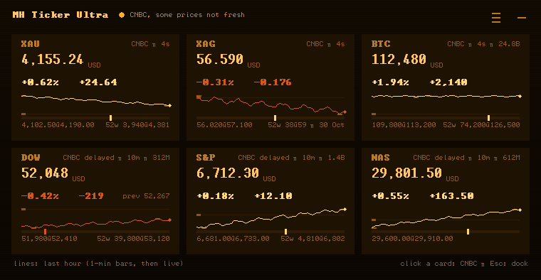
amber-crt — Terminal
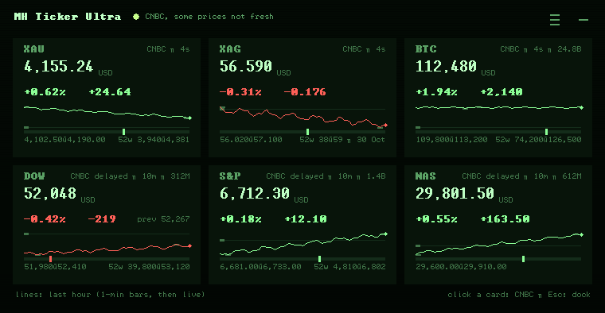
phosphor — Terminal
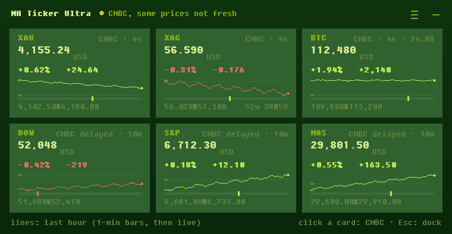
gameboy — Fixedsys
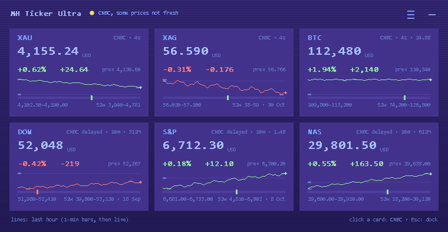
c64 — Consolas
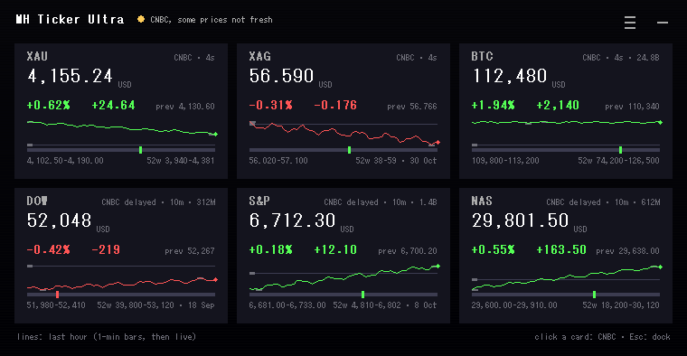
pc98 — MS Gothic, gold accent